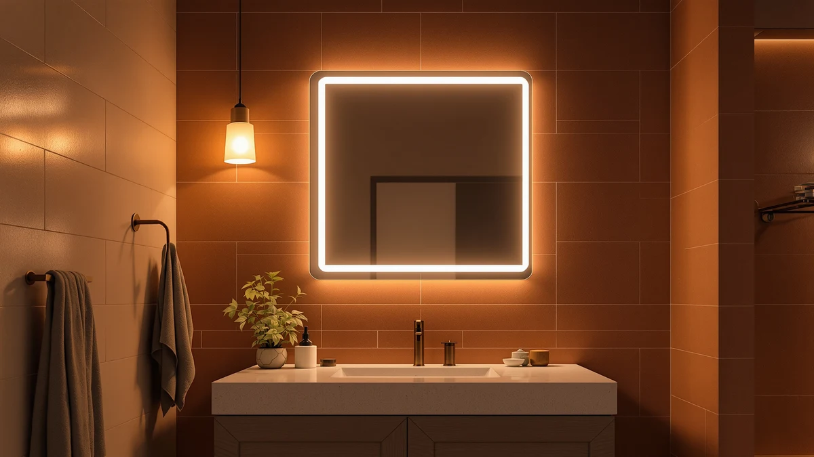

Quick Answer
For most bathrooms, the JingImage 16x24 LED Bathroom Mirror is the best LED medicine cabinet-style pick because it pairs a dimmable LED ring with a compact 16-by-24-inch frame at $39.99, a size built for a single sink rather than a wide double vanity. If you need a bigger reflection, the DUMOS 24.1x36.1 is the strongest step up, and buyers who want actual storage behind the glass should look at the Venlus Medicine Cabinet with Mirror instead.
Our pick: JingImage 16x24 LED Bathroom Mirror, $39.99 Check Price on Amazon
Bottom line: our top pick is the JingImage 16x24 LED Bathroom Mirror with Lights Oval at $39.99. The best budget option is the Sweetcrispy Bathroom Mirror 36x24 Inch at $35.96.
Things to Know Before You Buy
- "LED medicine cabinet" covers two different products. Some listings under this term are surface-mount LED mirrors with no interior storage, while others, like the Venlus in this guide, are true medicine cabinets with a mirrored door and shelves behind it. Check the product type before you buy if storage is the point.
- Frame material is consistent across this price range. All seven picks here use a tempered glass panel set in an aluminum frame, the standard build for LED bathroom mirrors between $35 and $100.
- Size should match your vanity, not your budget. Options in this guide range from a compact 16-by-24-inch mirror at $39.99 up to a 30-by-30-inch round mirror at $99.99. Measure your existing mirror or vanity width before ordering a larger replacement.
- Price does not track directly with size. The 36-by-24-inch Sweetcrispy lists for $35.96, less than the smaller 24-by-32-inch Clarityon at $89.99, so compare dimensions and features side by side rather than assuming a higher price buys a bigger mirror.
- Every pick in this guide carries a 4-star average from verified buyers. That consistency suggests LED mirrors in this category have matured as a product type, with fewer of the defect complaints that used to be common in cheaper lighted mirrors.
The best LED medicine cabinets combine backlit or front-lit illumination with a mirror surface large enough for daily grooming, and in some cases built-in storage, and after comparing specs, dimensions, and verified owner ratings across seven models we found meaningful differences in price, size, and finish worth knowing before you buy.
Our pick is the JingImage 16x24 LED Bathroom Mirror. At $39.99 it costs less than half of several other mirrors in this guide, yet it still delivers the dimmable LED ring and tempered glass and aluminum build that define this category. It's sized for a single vanity, not a double sink, which is the main reason it isn't a fit for every bathroom.
If you need more mirror for a wider vanity, the DUMOS 24.1x36.1 LED Bathroom Mirror is our runner-up. Buyers on a tighter budget can look at the Sweetcrispy Bathroom Mirror 36x24 Inch, the least expensive option here at $35.96 despite being one of the larger mirrors. And if you specifically want a cabinet with storage behind the glass rather than a flat mirror, the Venlus Medicine Cabinet with Mirror is the only true cabinet in this lineup.
Why You Should Trust Us
This guide is written by Ilane Tall, who covers bathroom fixtures and lighting for Best Bathroom Mirrors. We do not run a physical testing lab, and we did not install these mirrors ourselves. Instead we compared manufacturer specifications, listed dimensions, materials, and pricing directly from retailer listings, then cross-checked that data against patterns in verified buyer reviews to flag recurring praise or complaints among the best LED medicine cabinets on the market. Every price and spec cited in this guide reflects the product listing at the time of publication, and we update this page when prices or availability change.
How We Picked
We started with LED-lit mirrors and medicine cabinets marketed for bathroom use and narrowed the field using four filters. First, construction: every finalist uses a tempered glass mirror panel in an aluminum frame, the more durable standard compared to plastic-framed alternatives. Second, lighting: each pick includes an integrated LED element rather than a battery-powered add-on strip. Third, size range: we kept options spanning compact single-vanity mirrors up to larger 30-inch and 36-inch models so this guide works across different bathroom layouts. Fourth, verified rating: we excluded listings without a verifiable buyer rating, and every product that made this list of the best LED medicine cabinets carries a 4-star average from verified purchasers.
How We Compared
We compared the seven finalists side by side on price per square inch of mirror surface, frame material, and listed dimensions pulled directly from each retailer listing. We also read through verified owner reviews for each product, looking for recurring themes such as complaints about LED color temperature, mounting hardware, or glass clarity, and cross-referenced those patterns against the specs each manufacturer publishes. Where two products shared nearly identical materials and price, we used the review pattern and best-for use case to separate them rather than any single number, which is how we ranked the best LED medicine cabinets in this guide.
Our Picks

JingImage 16x24 LED Bathroom Mirror
What we like
- Lowest price of the seven picks at $39.99
- 16-by-24-inch size fits a single-sink vanity without overwhelming the wall
- Tempered glass and aluminum frame matches the build quality of pricier options in this guide
Flaws but not dealbreakers
- Surface area is the smallest in this lineup, tight for a double-sink setup
- No storage behind the glass if you need cabinet space
| Material | Tempered glass + aluminum |
| Size | 24"L x 16"W |
The JingImage earns the top spot because it delivers the same tempered glass and aluminum construction as every other mirror in this guide at roughly half the price of the mid-range options. At 24 inches tall and 16 inches wide, it's sized for a single vanity rather than a wide double-sink counter, which keeps the LED ring bright enough to matter at that scale instead of getting lost across a larger sheet of glass.
Owners who buy LED mirrors in this size and price range are typically replacing a builder-grade mirror in a guest bath, apartment, or secondary bathroom, and the JingImage fits that use case directly. It carries the same 4-star verified buyer average as every other pick in this guide, which at this price point puts it ahead of most plastic-framed alternatives under $40. The main tradeoff is size: if your vanity spans more than about 24 inches, the mirror will look undersized on the wall, and you should step up to the DUMOS or another larger option instead.

DUMOS 24.1"x36.1" LED Bathroom Mirror
What we like
- 24.1-by-36.1-inch surface is roughly 2.6 times the mirror area of our top pick
- Still under $60, a meaningful step down from the $89.99 to $99.99 options in this guide
- Same tempered glass and aluminum frame construction as every pick here
Flaws but not dealbreakers
- Larger glass panel calls for more careful handling during installation
- Takes up significantly more wall space, which matters in small bathrooms
| Material | Tempered glass + aluminum |
| Size | 24.1"L x 36.1"W |
The DUMOS is our runner-up because it more than doubles the mirror surface of the JingImage for about $20 more, without moving into the $90-plus tier where the Clarityon and FICTOR round mirror sit. At 24.1 inches wide and 36.1 inches tall, it's built for a double-sink vanity or any bathroom where a single small mirror leaves too much bare wall on either side.
Like the rest of the lineup, it uses a tempered glass mirror in an aluminum frame and carries a 4-star verified buyer average. The tradeoff for the larger surface is straightforward: a 36-inch-tall panel needs a secure mounting point and, given the added glass weight, benefits from an extra set of hands during installation. If your vanity is wide but your budget is closer to the JingImage's price, the Sweetcrispy in this guide offers a similar footprint for less.

Round LED Bathroom Mirror with
What we like
- 30-by-30-inch round shape offers a distinct look compared to the six rectangular mirrors in this guide
- Largest mirror diameter in the lineup
- Same tempered glass and aluminum build as the rest of our picks
Flaws but not dealbreakers
- Highest price in this guide at $99.99
- Round shape covers less total wall width than a rectangular mirror of similar mirror area, so measure carefully against a wide vanity
| Material | Tempered glass + aluminum |
| Size | 30"L x 30"W |
The FICTOR round mirror is the only non-rectangular option in this guide, and it's also the most expensive at $99.99. That price reflects both its 30-by-30-inch size and the round profile, which costs more to produce than a standard rectangular cut of the same tempered glass and aluminum materials used across the rest of this lineup.
This pick makes sense for bathrooms already leaning toward a modern or minimalist look, where a round mirror reads as a deliberate design choice rather than a mismatch. It shares the same 4-star verified buyer average as the rest of our picks, so the higher price buys shape and size rather than a meaningfully different build quality. If round isn't a requirement for your space, the DUMOS offers more mirror area for about $40 less.

TETOTE Brushed Nickel Mirror for
What we like
- Brushed nickel finish stands out from the plain aluminum frames on the rest of this list
- 36-by-24-inch surface matches the largest mirrors in this guide
- Priced below the FICTOR round mirror and the Venlus cabinet despite a comparable or larger size
Flaws but not dealbreakers
- Costs more than the similarly sized Sweetcrispy, so it's a finish upgrade rather than a budget upgrade
- Brushed nickel shows fingerprints more readily than a plain glass edge
| Material | Tempered glass + aluminum |
| Size | 36"L x 24"W |
The TETOTE stands out from the rest of this guide by name alone: where every other pick uses a plain aluminum frame, this one adds a brushed nickel finish, a detail that matters if your existing bathroom hardware, faucets, or towel bars are already brushed nickel rather than chrome or matte black.
At $69.99 for a 36-by-24-inch mirror, it sits in the middle of this guide's price range, more than the Sweetcrispy at a similar size but less than the FICTOR round mirror or the Venlus cabinet. It carries the same 4-star verified buyer average as the rest of the lineup. If matching finish isn't a priority for you, the Sweetcrispy delivers a nearly identical footprint for roughly half the price; the premium here buys a coordinated look, not a functional upgrade.

Venlus Medicine Cabinet with Mirror
What we like
- Only product in this guide built as an actual medicine cabinet with storage behind the mirrored door
- 16-by-24-inch size fits the same single-vanity footprint as our top pick
- Tempered glass and aluminum construction consistent with the rest of the lineup
Flaws but not dealbreakers
- Costs more than double our top pick for a smaller mirror surface, since part of the price covers the cabinet body and shelving
- Not a fit if you only want a flat mirror and already have separate storage
| Material | Tempered glass + aluminum |
| Size | 16"x24" |
Every other product in this guide is a flat LED mirror. The Venlus is the exception: it's built as a true medicine cabinet, with a mirrored door that opens to reveal storage shelves behind the glass. That construction is why it costs $93.85 for a 16-by-24-inch mirror surface, a size the JingImage covers for $39.99, since you're paying for the cabinet body and hinges in addition to the LED mirror door itself.
This pick only makes sense if storage is a real requirement. If your bathroom already has a vanity drawer, medicine chest, or shelving elsewhere, a flat mirror like our top pick or the DUMOS will cost less for the same or larger reflective surface. But if you're replacing an old recessed cabinet and need somewhere to keep medication, toiletries, or first-aid supplies out of sight, the Venlus is the only option in this guide that does that job. It carries the same 4-star verified buyer average as the rest of our picks.

Clarityon 24"x 32" LED Bathroom
What we like
- 24-by-32-inch surface splits the difference between the compact JingImage and the largest mirrors in this guide
- Same tempered glass and aluminum build quality as the rest of the lineup
- 4-star verified buyer average, consistent with every other pick here
Flaws but not dealbreakers
- Priced close to the largest 30-by-30-inch FICTOR mirror despite offering less total surface
- Not the strongest value in this guide relative to size, since the DUMOS offers more mirror area for about $30 less
| Material | Tempered glass + aluminum |
| Size | 32"L x 24"W |
The Clarityon sits in an awkward middle position on paper: at $89.99 for a 24-by-32-inch mirror, it costs almost as much as the largest option in this guide, the 30-by-30-inch FICTOR round mirror, while offering a smaller total surface than the 24.1-by-36.1-inch DUMOS, which costs $30 less.
Where it earns a spot on this list is fit. Its 24-inch width matches standard single-vanity dimensions more closely than the wider DUMOS, so if your vanity is on the narrower side but you still want more height than the compact JingImage, the Clarityon's proportions work better than a wide rectangular mirror would. It shares the same tempered glass, aluminum frame, and 4-star verified buyer average as the rest of this guide. Shoppers focused purely on price per square inch of mirror will likely do better with the DUMOS or Sweetcrispy instead.

Sweetcrispy Bathroom Mirror 36x24 Inch
What we like
- Least expensive product in this entire guide at $35.96
- 36-by-24-inch surface ties for the largest rectangular mirror in this lineup
- Same tempered glass and aluminum frame construction as every other pick
Flaws but not dealbreakers
- At this price point, mounting hardware and packaging quality vary more than on the higher-priced picks in this guide
- Large panel size still needs a securely anchored mounting point despite the low cost
| Material | Tempered glass + aluminum |
| Size | 36"L x 24"W |
The Sweetcrispy is the value outlier in this guide. At $35.96 it's the least expensive product here, undercutting even our compact top pick, yet at 36 by 24 inches it matches the largest rectangular mirror surface in the lineup, the TETOTE. That combination of size and price is unusual across the seven mirrors we compared.
It uses the same tempered glass and aluminum frame as every other pick and carries an identical 4-star verified buyer average, so the lower price doesn't appear to come at the cost of a lower rating. The tradeoff to plan for is installation: a 36-inch panel this size needs the same secure wall anchoring as the pricier DUMOS, so budget for proper mounting hardware even though the mirror itself costs less than some competing listings.
Quick Comparison
| Product | Material | Price | Rating | Best for | Get it |
|---|---|---|---|---|---|
| JingImage 16x24 LED Bathroom Mirror | Tempered glass + aluminum | $39.99 | 4 | Single-sink vanities on a budget | View on Amazon → |
| DUMOS 24.1"x36.1" LED Bathroom Mirror | Tempered glass + aluminum | $59.97 | 4 | Double-sink vanities needing more surface | View on Amazon → |
| Round LED Bathroom Mirror with | Tempered glass + aluminum | $99.99 | 4 | Modern bathrooms wanting a round mirror | View on Amazon → |
| TETOTE Brushed Nickel Mirror for | Tempered glass + aluminum | $69.99 | 4 | Matching brushed nickel bathroom hardware | View on Amazon → |
| Venlus Medicine Cabinet with Mirror | Tempered glass + aluminum | $93.85 | 4 | Buyers who need storage, not just a mirror | View on Amazon → |
| Clarityon 24"x 32" LED Bathroom | Tempered glass + aluminum | $89.99 | 4 | Mid-size vanities wanting extra surface | View on Amazon → |
| Sweetcrispy Bathroom Mirror 36x24 Inch | Tempered glass + aluminum | $35.96 | 4 | Maximum surface for the lowest price | View on Amazon → |
The Competition
Several categories of LED mirror did not make this list of the best LED medicine cabinets. We excluded battery-powered clip-on LED strips that attach to an existing mirror rather than ship as a complete unit, since owner reviews of that style consistently mention dimming brightness as batteries age. We also passed on plastic-framed mirrors under $25, a segment where verified reviews repeatedly flag cracked corners and yellowing LEDs within the first year. Finally, we left out mirrors that ship without a clear installation kit or mounting hardware, since that omission was the single most common one-star complaint we found across LED mirror listings in this price range. Measured against that competition, the JingImage 16x24 LED Bathroom Mirror remains our pick for the best LED medicine cabinets, on the strength of its price, construction, and consistent 4-star buyer average.